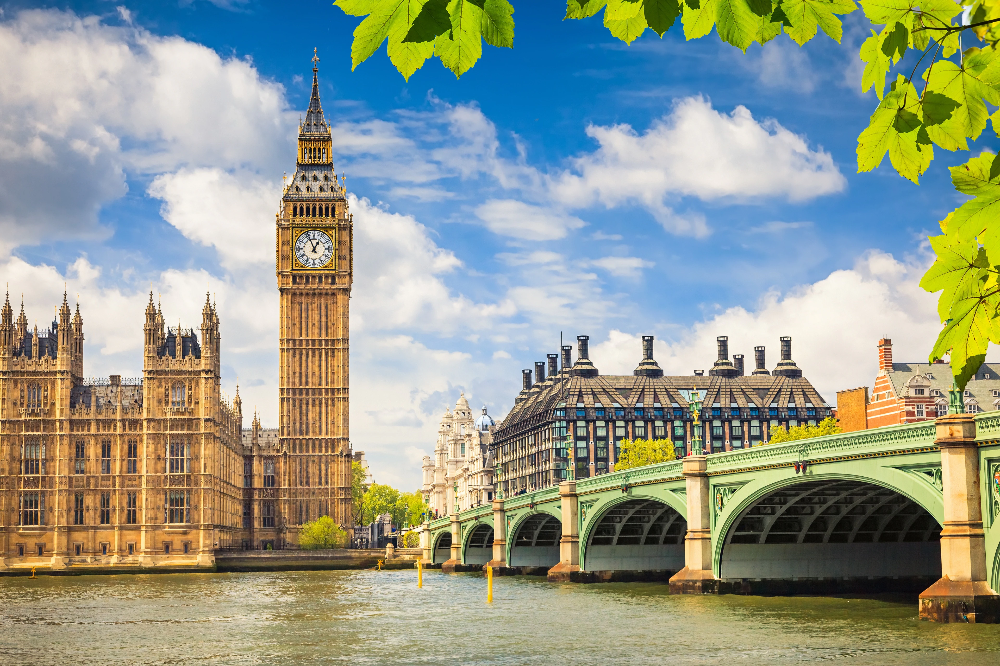
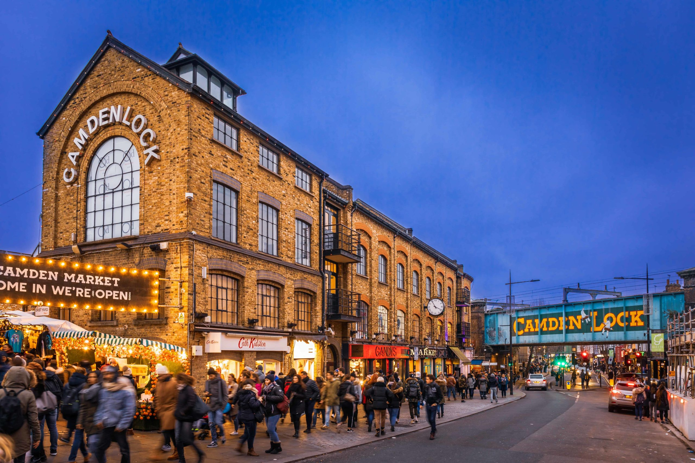

Top Destinations

Big Ben
Iconic clock tower and a symbol of London’s historic elegance.

London Eye
Enjoy panoramic views of the city from this giant observation wheel.

Tower Bridge
A magnificent drawbridge offering breathtaking river views and cityscape.
Buckingham Palace
The residence of the British monarch with iconic royal ceremonies.

British Museum
Discover ancient civilizations through one of the world’s greatest collections.

Camden Market
Eclectic mix of food stalls, fashion, and alternative culture.